2026-10-29 · Source checkpoints 51a9f137 / 3c708f79 · Existing game viewport and native artwork.
Evidence and limitations · Generation audit · Camera poses · Combat results
Seed 466713 · main floor 4 · 500×500 · 930 generated rooms · 8 stamped building rooms · 33,997 open road tiles · no accidentally covered roads. Structural generation is real; population/economy is omitted. Elevated cameras inspect the current geometry and do not certify reachable upper storeys.
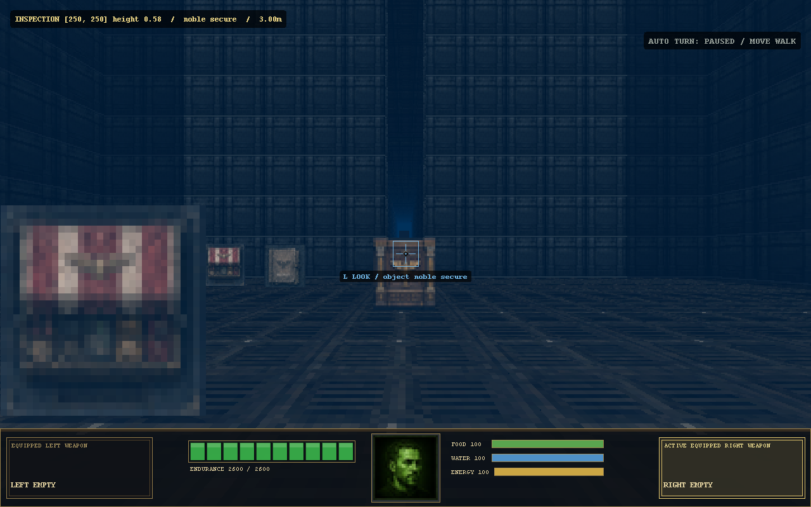
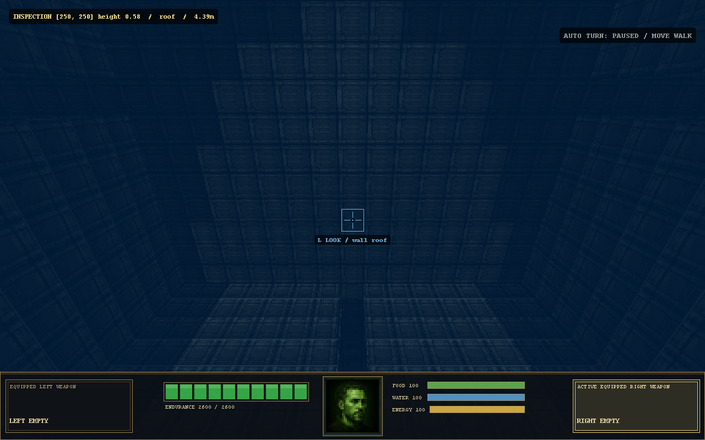
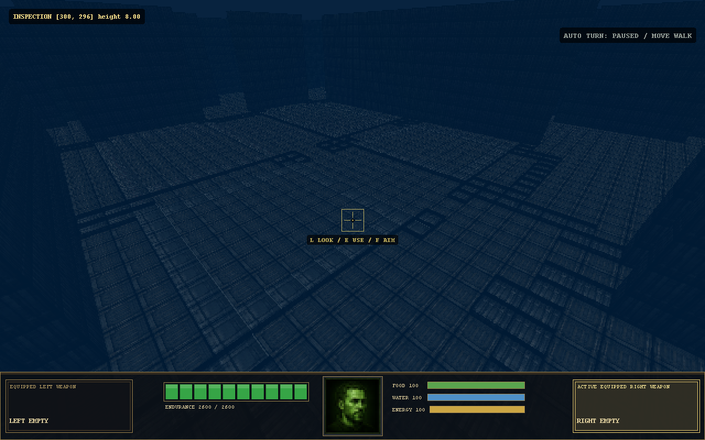
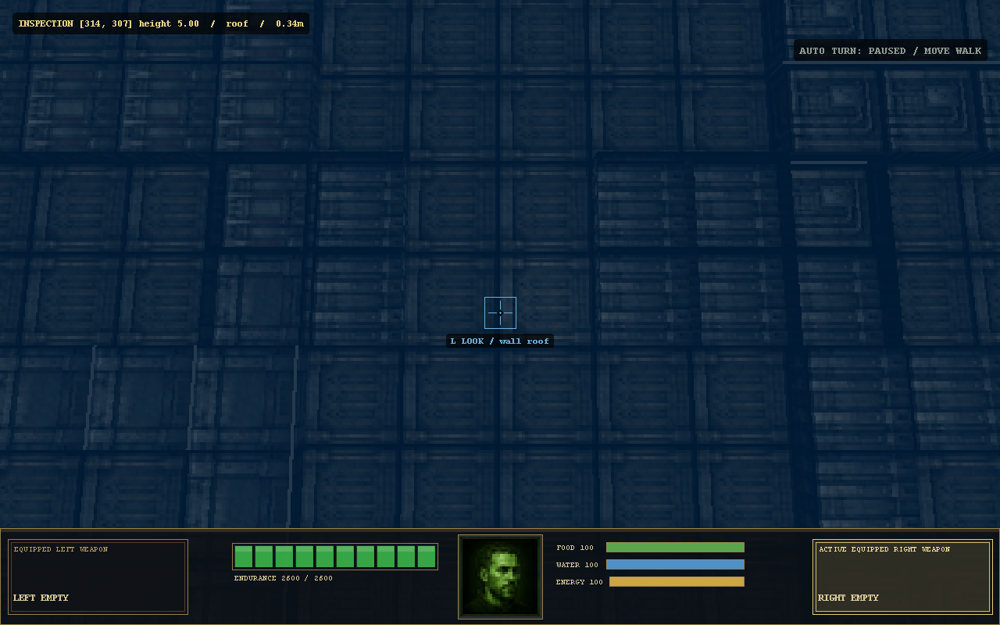
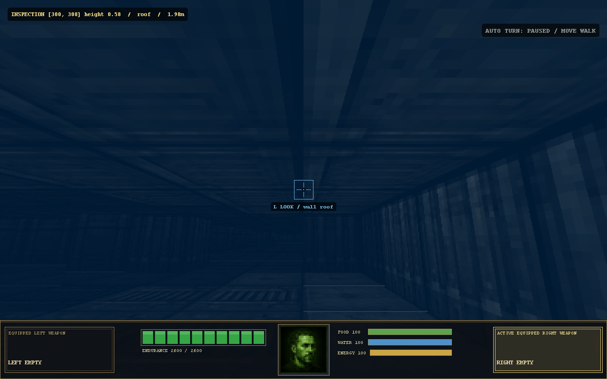
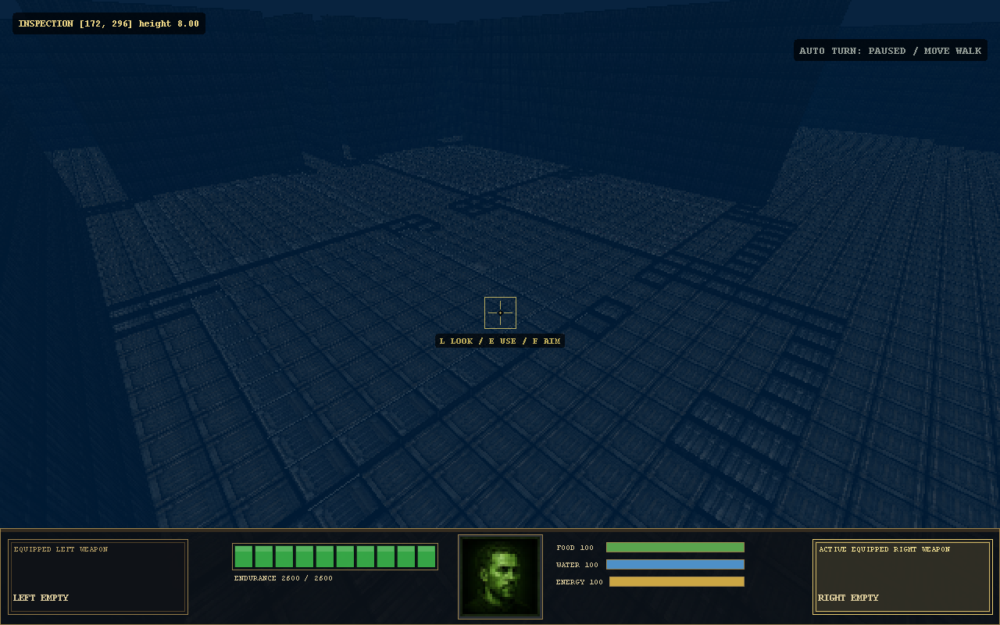
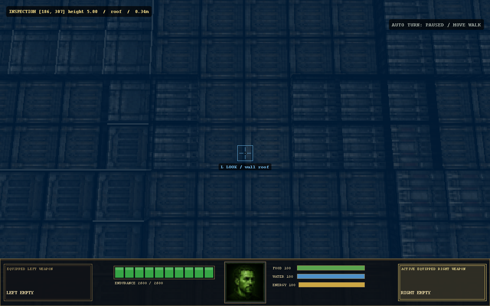
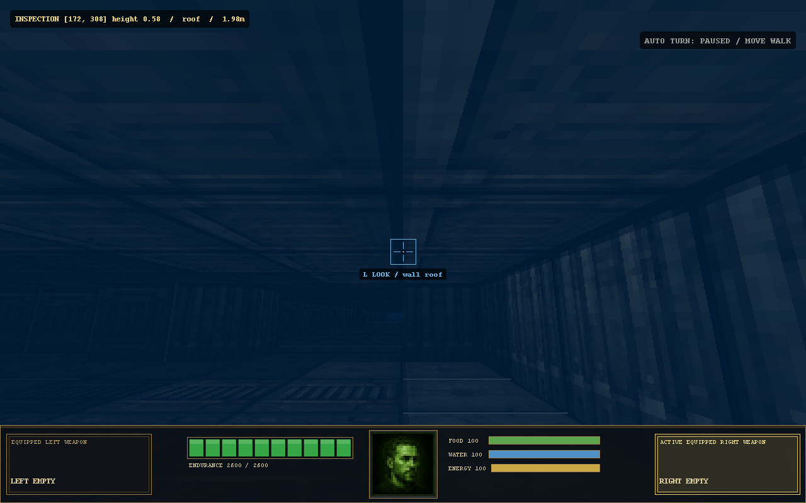
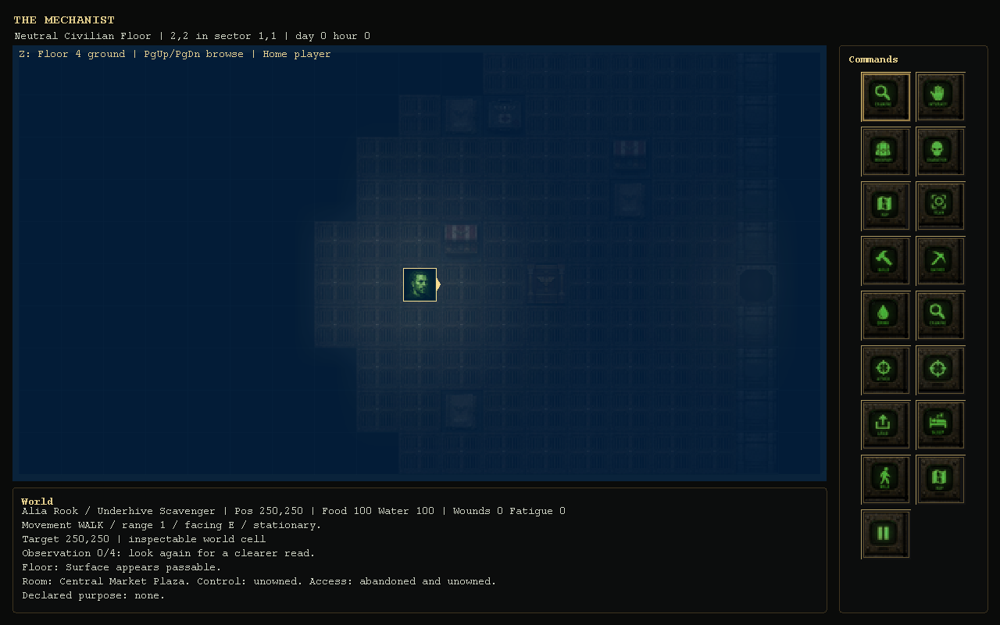
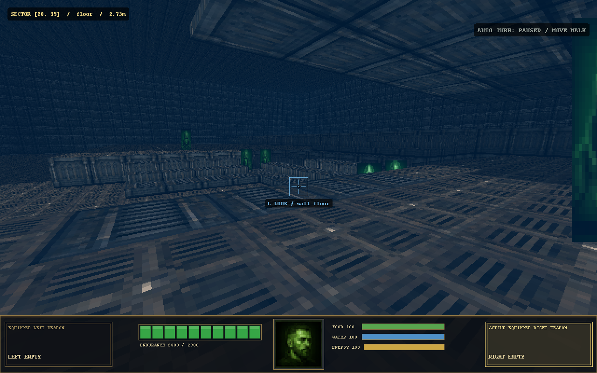
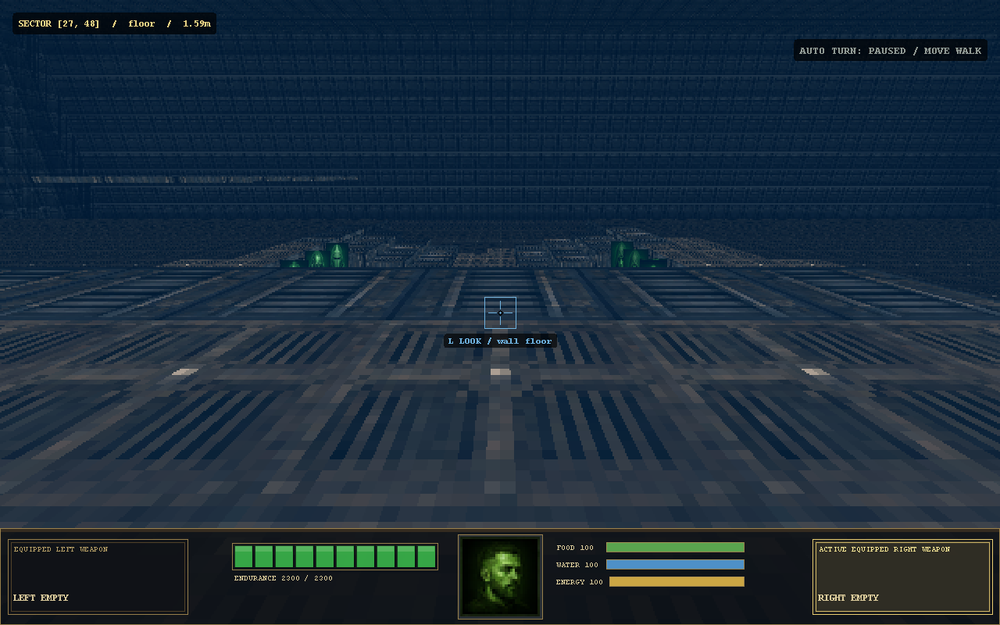
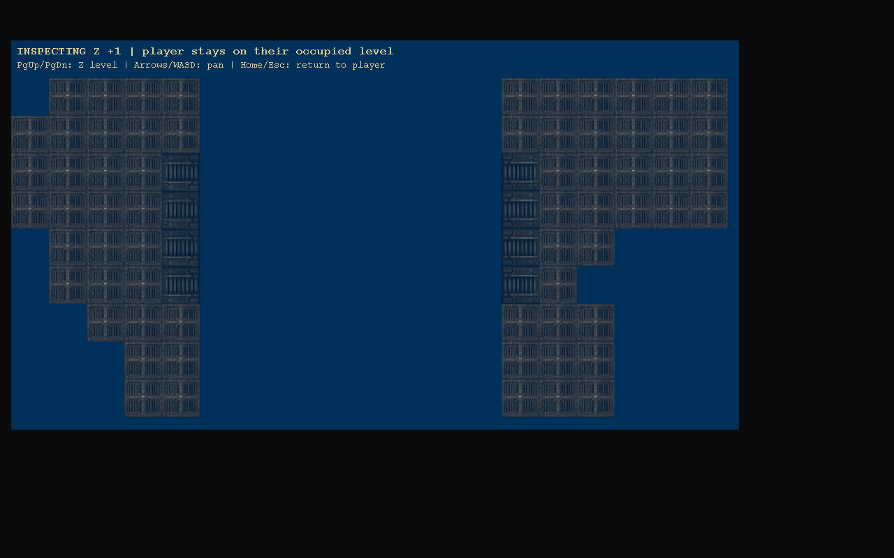
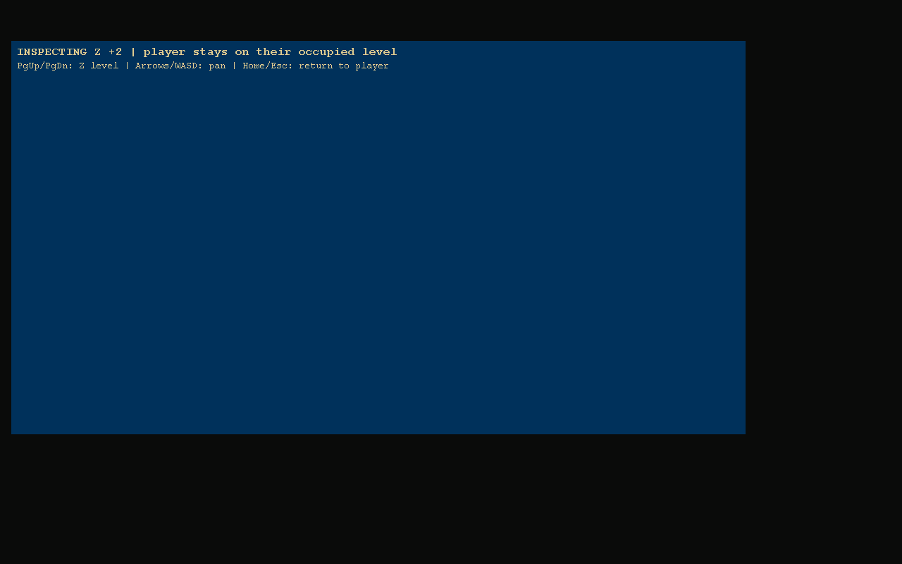
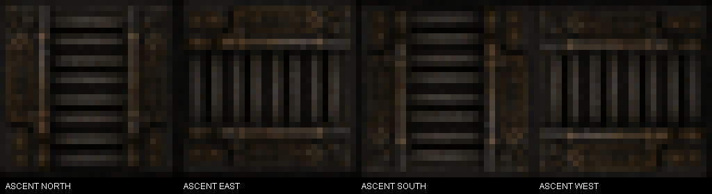
Retained for comparison. The following predate multiple rendering refinements; this is not a controlled fog-only comparison.
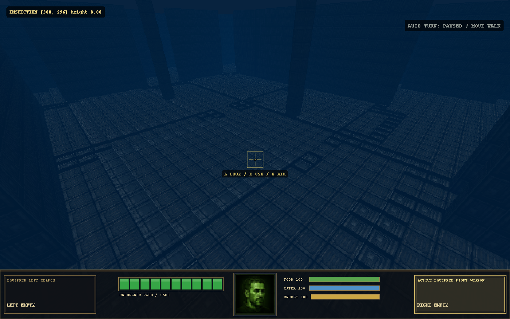
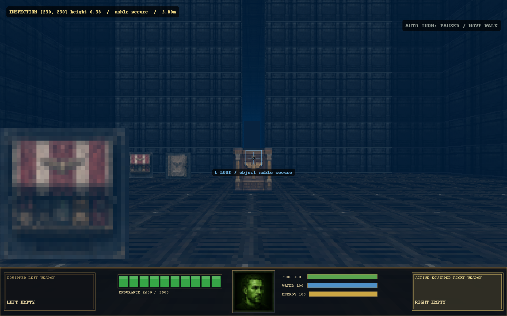
Room-over-room storeys still need distinct geometry and occupancy. Height-based material bands, surface wear and architectural variation are recorded for later development.